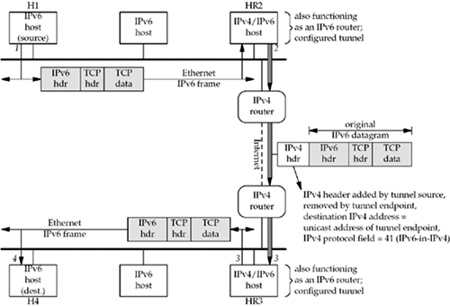

B.3 The 6bone
The 6bone is a virtual network that was created in 1996 for reasons similar to the MBone: users with islands of IPv6-capable hosts wanted to connect them together using a virtual network without waiting for all the intermediate routers to become IPv6-capable. As of this writing, it is being phased out in favor of native IPv6 deployment; it is expected that the 6bone will cease to operate by June 2006 [Fink and Hinden 2003]. We cover the 6bone here because the examples still demonstrate configured tunnels. We will expand the example to include dynamic tunnels in Section B.4.
Figure B.2 shows an example of two IPv6-capable LANs connected with a tunnel across IPv4-only routers. We show the following numbered steps in this figure:

Host H1 on the top LAN sends an IPv6 datagram containing a TCP segment to host H4 on the bottom LAN. We designate these two hosts as "IPv6 hosts," but both probably run IPv4 also. The IPv6 routing table on H1 specifies that host HR2 is the next-hop router and an IPv6 datagram is sent to this host.
Host HR2 has a configured tunnel to host HR3. This configured tunnel allows IPv6 datagrams to be sent between the two tunnel endpoints across an IPv4 Internet by encapsulating the IPv6 datagram in an IPv4 datagram (called "IPv6-in-IPv4 encapsulation"). The IPv4 protocol field has a value of 41. We note that the two IPv4/IPv6 hosts at the ends of the tunnel, HR2 and HR3, are both acting as IPv6 routers since they are forwarding IPv6 datagrams that they receive on one interface out another interface. The configured tunnel counts as an interface, even though it is a virtual interface and not a physical interface.
The tunnel endpoint, HR3, receives the encapsulated datagram, strips off the IPv4 header, and sends the IPv6 datagram onto its LAN.
The destination, H4, receives the IPv6 datagram.
 |